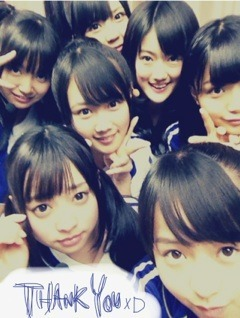

| 2012/04 14 Sat | 116回目*marika |
いつも読んでくださってる方、
初めて読んでくださった方、
コメントしてくださった方、
ありがとうございます:)
まりかよん

肩こりはんぱない

はんぱない、、
平仮名だとなんかかわいい
あっ、前回の記事に書いた
自己紹介の
「一年から来ました伊藤万理華です」は
ウケ狙いじゃないんだ。
わかってくれ
 ‼
‼
‼
というか言ってから間違えてるのが解るの遅すぎた笑
「...ん⁇(なんでみんな笑ってるんだ？)
＿......あ"っああぁぁ‼///////」

 ...
...
クラスのみんながツッコんでくれてから
やっと理解できた。
最近ボケが激しいな、、

音漏れの写真、落書きしてるのわかったかなぁ^^⁇
溶けた音符が耳から垂れてってるんだよ

よく見てみて:D

静岡ダービーでのスタジアムライブ‼
雨の中、初めてグラウンドでライブ

サポーターのみなさんも暖かく迎えてくださって...‼
楽しく踊ることができました。
ハーフタイムにグラウンド一周
 っ
っ
っ
手を振ってくださって嬉しかった



乃木坂46を暖かく迎えてくださって
ありがとうございましたxD
みんなお疲れさん
 ★
★
★
昨日はあったかかったのに
今日はちょっと寒かった

毎日服何枚くらい着ればちょうど良いかわからん。
みなさん、風邪ひいてないですか⁇
体調悪くならないように
毎日早寝早起きしようぜっ
 ‼
‼
‼
学校も余裕もって行くようにしよっと‼
明日もお仕事頑張りまりかや

まゆげふさふさ
左の黒目の方が若干大きい。
それだけ
ぴよぴよ
くわっっっっっ

おやすみなさい
まりか
コメント(106)
2012/04/14 21:48